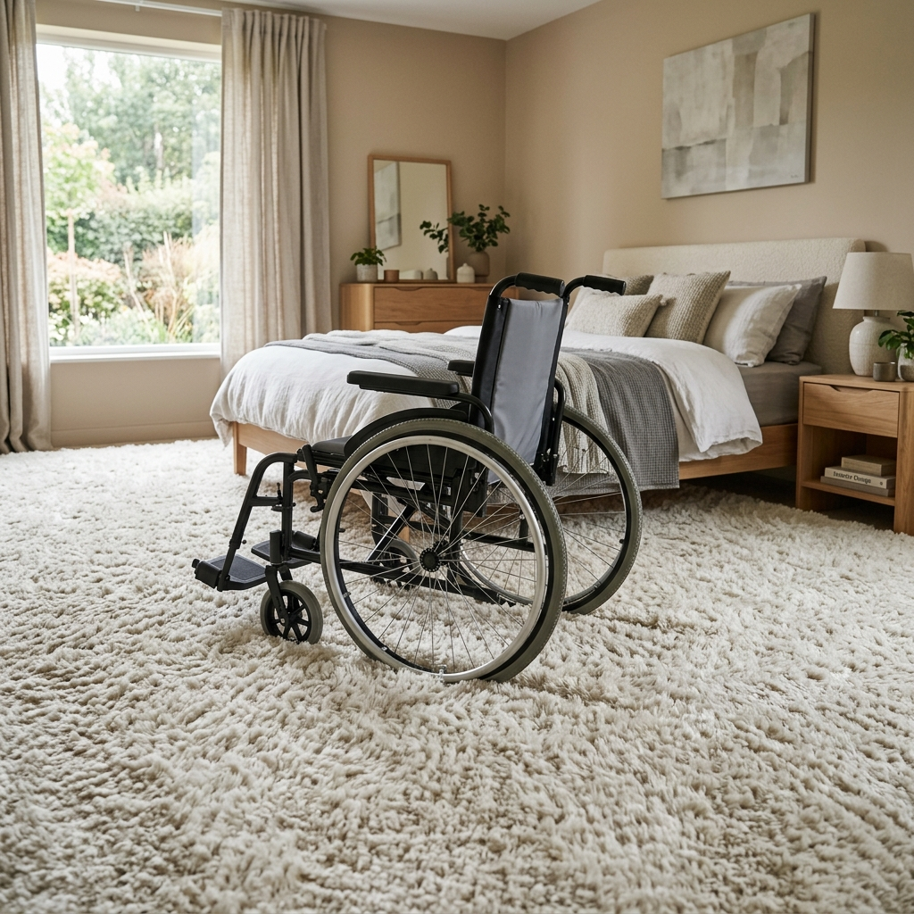
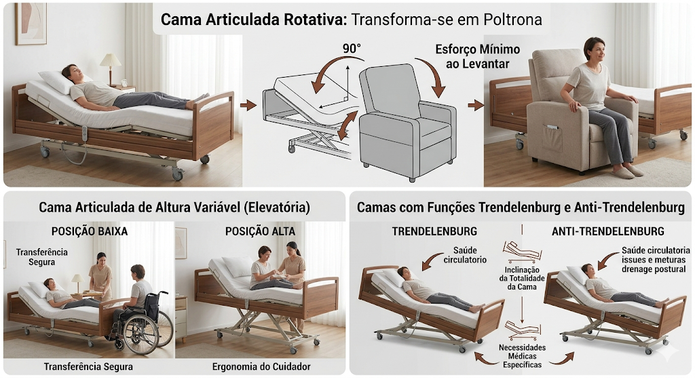
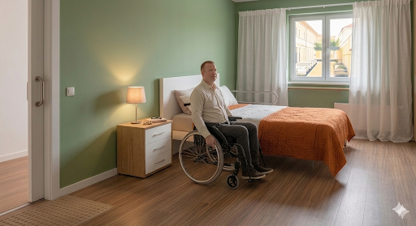

Quartos de Dormir
Privacidade e funcionalidade unem-se para criar um ambiente de descanso inclusivo.
Espaço de Transferência
Mínimo de 1,20m de largura livre num dos lados da cama.
.png)
Pavimento Vinílico
Nos quartos, o conforto é primordial, mas a circulação fluida não pode ser prejudicada.
Pavimento Vinílico
Recomenda-se a utilização de pavimento vinílico em rolo ou régua click de alta resistência. É a melhor escolha pelo conforto térmico, atenuação acústica e facilidade em passar a mopa húmida. Garante o deslize perfeito das rodas sem deformar.

Carpetes e tapetes grossos (prendem as rodas e acumulam ácaros) e madeiras naturais macias (riscam facilmente com eixos e rodas, e exigem manutenção contínua).
Roupeiros sem Portas
Os roupeiros sem portas, frequentemente chamados de closets abertos ou guarda-fatos abertos, são soluções de arrumação modernas focadas na visibilidade, acessibilidade e otimização de espaço. Para pessoas em cadeiras de rodas, este modelo é ideal por eliminar barreiras físicas, permitindo o acesso fácil às peças de roupa.
1. Função dos Roupeiros sem Portas
- Acessibilidade e Rapidez: Facilitam a visualização rápida e o acesso direto às roupas, poupando tempo no dia a dia.
- Otimização de Espaço: Ideais para quartos pequenos, pois a ausência de portas de abrir (que ocupam espaço na área de circulação) maximiza a área útil.
- Arejamento: A falta de barreiras físicas permite que o ar circule, reduzindo o risco de bolor, fungos e traças.
- Estética: Proporcionam um visual moderno, minimalista e organizado (quando bem mantido), conferindo uma sensação de amplitude.
2. Características Principais
- Estrutura Aberta: Geralmente compostos por módulos de metal, madeira ou combinados, com prateleiras, gavetas e varões expostos.
- Personalização: Permitem configurar as alturas das prateleiras e dos varões de acordo com as necessidades do utilizador.
- Versatilidade: Podem ser montados em nichos, paredes inteiras ou usados como divisórias de ambientes.
.png)
3. A Peça para Puxar a Roupa
A peça-chave utilizada por pessoas numa cadeira de rodas para puxar a roupa de que necessitam, especialmente em áreas altas, é o Varão Basculante (também conhecido como Pantógrafo ou elevador de roupeiro).
- Como funciona: É um mecanismo de varão rebatível que se instala na parte superior do roupeiro. Possui uma vara ou pega central que, ao ser puxada, faz com que todo o varão baixe suavemente até uma altura ergonómica (ao nível do peito ou do colo), permitindo ao utilizador alcançar a roupa com facilidade e sem esforço excessivo.
- Vantagens: Permite aproveitar a altura total do roupeiro, mantendo a autonomia do utilizador.
Outras Soluções de Acessibilidade
- Varões extraíveis: Calhas extensíveis que trazem a roupa para a frente.
- Varas de alcance: Ferramentas manuais para alcançar cabides em locais altos.
- Gavetas inferiores deslizantes: Dispostas lateralmente para um fácil acesso.
Os roupeiros sem portas, aliados a um varão basculante, transformam o ato de vestir numa tarefa autónoma e segura para quem utiliza cadeira de rodas.
.png)
Quarto Acessível: Camas Elétricas
As camas elétricas articuladas são equipamentos indispensáveis para garantir a autonomia, o conforto e a segurança de pessoas com deficiência física ou mobilidade reduzida, além de facilitarem o trabalho dos cuidadores. O movimento motorizado permite ajustar o ângulo do tronco e das pernas através de um comando simples, prevenindo lesões e melhorando a circulação.
Principais Tipos
- Cama Elevatória (Altura Variável): Possui motor que eleva ou baixa todo o estrado verticalmente. Facilita a transferência segura para a cadeira de rodas (rebaixada) e melhora a ergonomia do cuidador (elevada).
- Cama Rotativa: Modelo tecnológico onde o colchão roda de forma autónoma e transforma-se numa poltrona virada para fora, permitindo sair da cama com mínimo esforço.
- Funções Trendelenburg: Permitem inclinar a totalidade da cama (cabeça mais baixa que pés ou vice-versa). Indicadas para necessidades médicas e problemas circulatórios graves.

Componentes Cruciais
- Colchão Clínico: Viscoelástico preventivo ou de pressão alterna (anti-escaras) para quem passa muitas horas na mesma posição.
- Grades de Proteção Laterais: Indispensáveis para garantir a segurança contra quedas (rebatíveis ou deslizantes para não obstruir a saída).
- Pendural de Calcanhar: Arco fixado na cabeceira que permite ao utilizador puxar-se de forma independente.
Marcas Recomendadas em Portugal
- Invacare Medley Ergo: Focada no ambiente domiciliário, com estética residencial em painéis de madeira.
- Cama Elétrica JMS: Fabrico nacional de referência, com equilíbrio perfeito entre robustez e comodidade.
- Cama Rotativa "Mais que Cuidar": Máxima independência na transição para a posição de pé.
Casos Práticos
.png)
.png)
.png)
.png)
